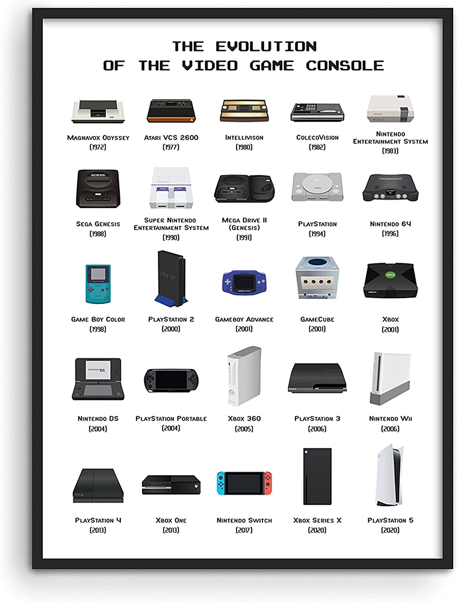

In de beginjaren van gaming waren consoles eenvoudige apparaten met beperkte mogelijkheden. De eerste populaire gameconsole, de Magnavox Odyssey, werd in 1972 uitgebracht en bood eenvoudige spellen zoals Pong en Tennis. Deze spellen hadden simpele graphics en waren meestal zwart-wit.
Naarmate de technologie vorderde, werden consoles steeds geavanceerder. De release van de Atari 2600 in 1977 markeerde een keerpunt in de game-industrie. Deze console bood kleurengraphics en cartridge-gebaseerde spellen, waardoor spelers een breder scala aan spellen konden ervaren.
In de jaren '80 en '90 werden consoles zoals de Nintendo Entertainment System (NES) en de Sega Genesis enorm populair. Deze consoles introduceerden geavanceerdere graphics en geluid, waardoor spelers een meer meeslepende ervaring kregen.
De laatste jaren hebben we een aantal opmerkelijke ontwikkelingen gezien op het gebied van game consoles. Deze nieuwe generatie consoles heeft de manier waarop we gamen veranderd en heeft ons meegenomen naar een geheel nieuwe dimensie van entertainment. Laten we eens kijken naar enkele van de meest recente ontwikkelingen.
Een van de meest opvallende consoles die onlangs is uitgebracht, is de PlayStation 5. Deze console, ontwikkeld door Sony, heeft gamers over de hele wereld enthousiast gemaakt. Met zijn krachtige hardware en indrukwekkende grafische mogelijkheden biedt de PlayStation 5 een ongeëvenaarde game-ervaring.
Dit zijn enkele consoles die je zeker kent:
- -PS5
- -NINTENDO WII
- -XBOX 360
- -NINTENDO SWITCH
*Zo evolueerde de console*